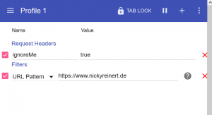

Zugriff nicht loggen, wenn ein bestimmter HTTP-Request-Header gesetzt ist
OK, ich tu mich etwas schwer, das folgende in einen Titel zu gießen, der nicht länger ist, als die eigentlich Anleitung. Wenn du an deiner Webseite arbeitest, möchtest du vielleicht vermeiden, dass deine Aufrufe mit deinem Browser im Log-File von nginx landen. Dafür gibt es eine Menge Möglichkeiten, ich mag die folgende aber besonders.
Zuerst benötigst du dafür ein Plugin, um den HTTP-Request-Header zu modifizieren. Ich nutze dafür ModHeader für Firefox, für Chrome gibt es ähnliche Plugins. Dort legst du einen benutzerdefinierten Header an, dem du z.B. “true” als Wert zuweist. Bei diesem Plugin kannst du außerdem festlegen, dass der Header nur auf einer bestimmten Seite hinzugefügt wird.
[caption id=“attachment_2395” align=“aligncenter” width=“300”] 
{kind=link}
Als nächstes definierst du in deiner nginx-Config eine Regel, die diesen Header ausliest:
map $http_ignoreMe $log_this {
~true 0;
default 1;
}
Mit $http_ignoreMe sprichst du den zuvor angelegten Header an, $log_this erzeugt eine Variable, auf die du später zugreifen kannst. Enthält der Header “true” (~true), wird die Variable $log_this auf 0 gesetzt, ansonsten bleibt sie 1. Als nächstes öffnest du den Server-Bereich deiner Webseite und suchst nach deiner Logging-Einstellung (alternativ kannst du natürlich auch die globale Logging-Einstellung anpassen:
access\_log /var/logs/access.log main if=$log\_this;
Der zweite Parameter ist das Log-File - natürlich. Der dritte Parameter verweist auf mein benutzerdefiniertes Log-Format, das muss hier nicht unbedingt stehen. Und am Ende schließlich kommt die Bedingung, dass nämlich nur geloggt wird, wenn $log_this wahr bzw. 1 ist. Jetzt startest du nginx neu… et voilá - Anfragen an deine Seite von deinem Browser aus werden ignoriert.